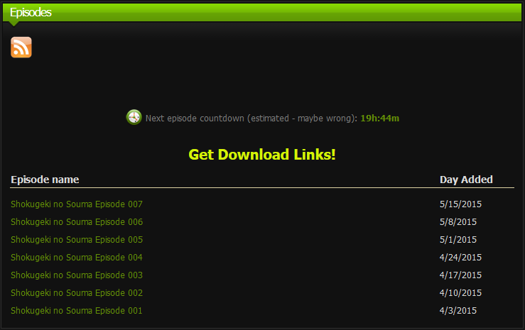
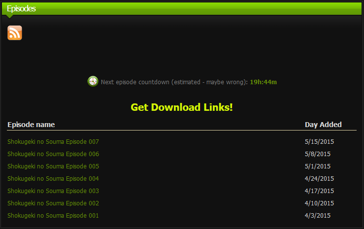

Download
Current version: 1.0
Standard: arasyi.github.io
Tips
Use Fast Filtering in DownThemAll! to select video quality and *text* as Renaming Mask.
Preview
Before:
After:

DownThemAll!:
Current version: 1.0
Standard: arasyi.github.io
Use Fast Filtering in DownThemAll! to select video quality and *text* as Renaming Mask.
Before:
After:

DownThemAll!: